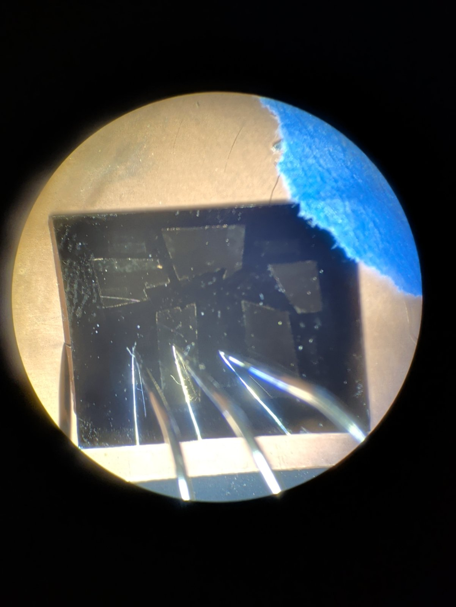
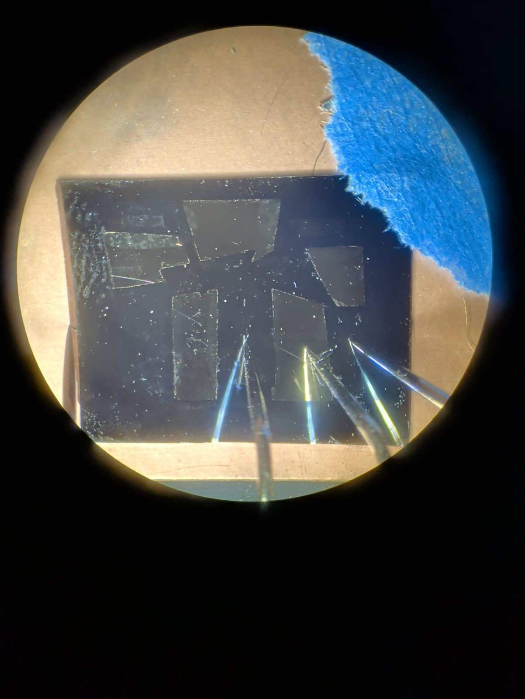
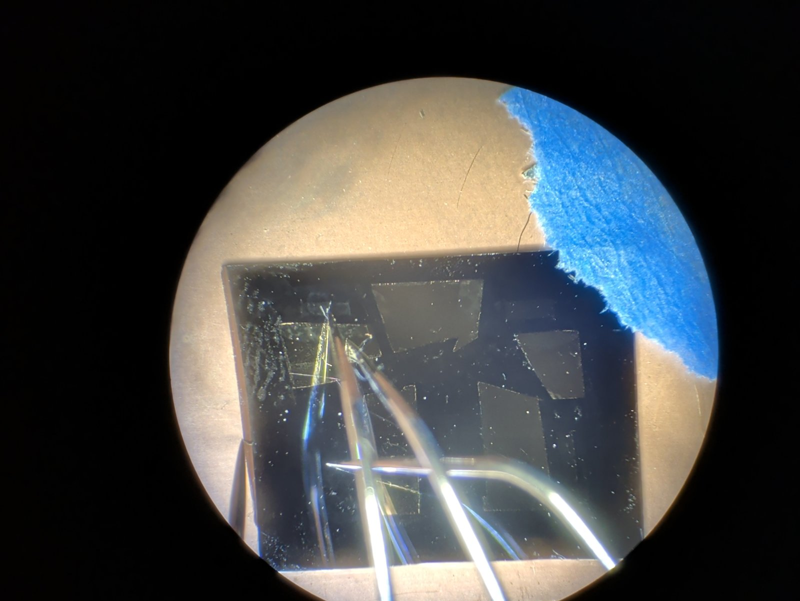
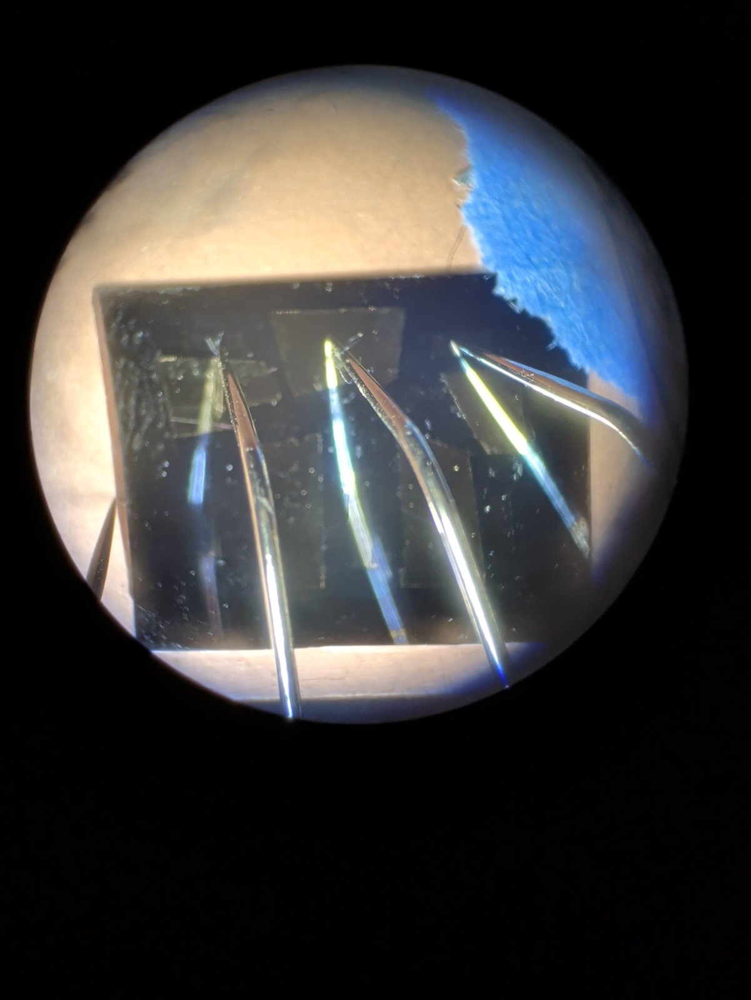
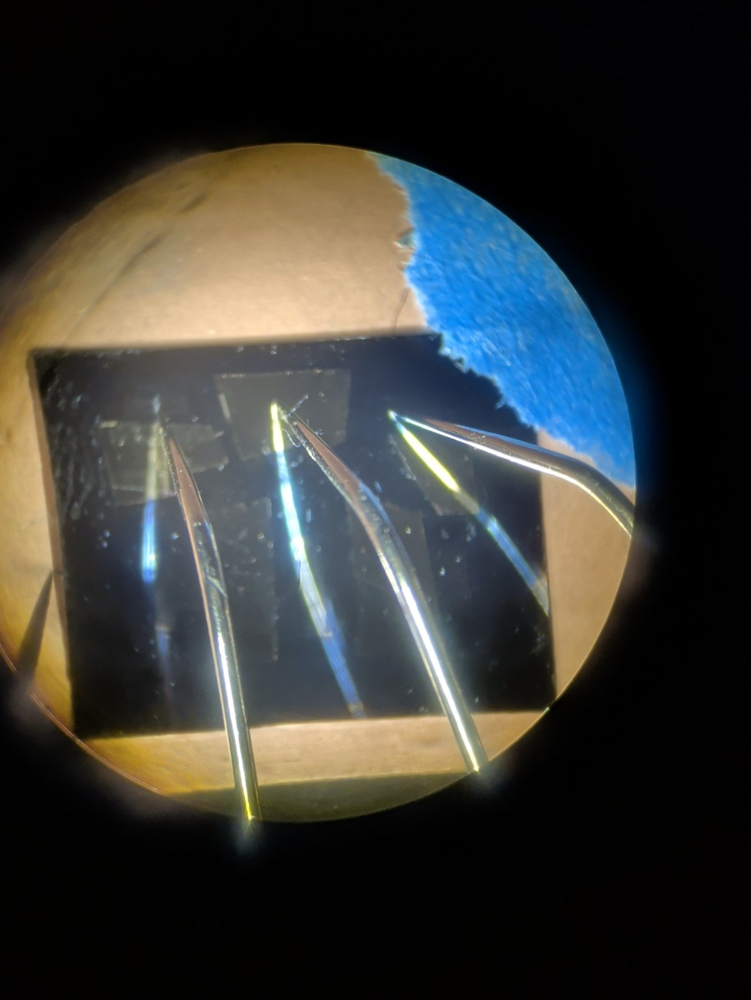

#1 · 00:29:07 · scan-mosfet-a-20261030_002907
6 pointsVgs -3 to -2 VVds 0 to 1 Vmax Ids 0.000 mA at Vgs -3 V, Vds 0 VIds at Vgs -3 V, Vds 1 V: 0.000 mAmax |Ig| 76633.7 nA
Files: scan-mosfet-a-20261030_002907.csv
#2 · 00:31:15 · scan-mosfet-a-20261030_003115
861 pointsVgs -3 to 17 VVds 0 to 20 Vmax Ids 3.706 mA at Vgs 17 V, Vds 19.5 VIds at Vgs -3 V, Vds 20 V: 0.000 mAmax |Ig| 1953077.8 nA

scan-mosfet-a-20261030_003115.jpg2026-10-30 00:52:19 First batch, bottom left
2026-10-30 00:58:21 Bottom right
Files: scan-mosfet-a-20261030_003115.csv · scan-mosfet-a-20261030_003115.txt · scan-mosfet-a-20261030_003115.jpg
#3 · 00:54:13 · scan-mosfet-a-20261030_005413
121 pointsVgs -3 to 17 VVds 0 to 20 Vmax Ids 3.281 mA at Vgs 17 V, Vds 20 VIds at Vgs -3 V, Vds 20 V: 0.000 mAmax |Ig| 65.4 nA

scan-mosfet-a-20261030_005413.jpg2026-10-30 00:58:59 Bottom right
Files: scan-mosfet-a-20261030_005413.csv · scan-mosfet-a-20261030_005413.txt · scan-mosfet-a-20261030_005413.jpg
#4 · 01:01:45 · scan-mosfet-a-20261030_010145
121 pointsVgs -3 to 17 VVds 0 to 20 Vmax Ids 2.426 mA at Vgs 17 V, Vds 20 VIds at Vgs -3 V, Vds 20 V: 0.000 mAmax |Ig| 58.6 nA

scan-mosfet-a-20261030_010145.jpg2026-10-30 01:07:10 Top left
Files: scan-mosfet-a-20261030_010145.csv · scan-mosfet-a-20261030_010145.txt · scan-mosfet-a-20261030_010145.jpg
#5 · 01:08:05 · scan-mosfet-a-20261030_010805
121 pointsVgs -3 to 17 VVds 0 to 20 Vmax Ids 1.215 mA at Vgs 17 V, Vds 20 VIds at Vgs -3 V, Vds 20 V: 0.000 mAmax |Ig| 62.6 nA

scan-mosfet-a-20261030_010805.jpg2026-10-30 01:12:37 Top
Files: scan-mosfet-a-20261030_010805.csv · scan-mosfet-a-20261030_010805.txt · scan-mosfet-a-20261030_010805.jpg
#6 · 01:13:17 · scan-mosfet-a-20261030_011317
121 pointsVgs -3 to 17 VVds 0 to 20 Vmax Ids 94.634 mA at Vgs 17 V, Vds 0 VIds at Vgs -3 V, Vds 20 V: 0.000 mAmax |Ig| 93094421.9 nA

scan-mosfet-a-20261030_011317.jpg2026-10-30 01:17:33 Top again with probes moved. Maybe we blew the gate or something??
Files: scan-mosfet-a-20261030_011317.csv · scan-mosfet-a-20261030_011317.txt · scan-mosfet-a-20261030_011317.jpg